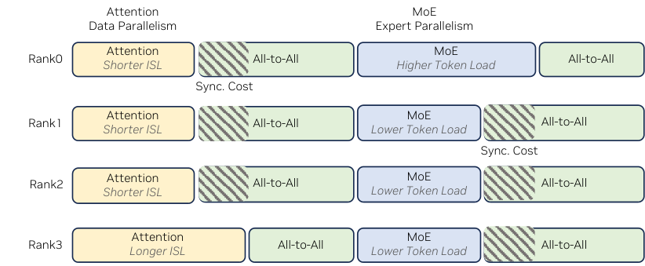
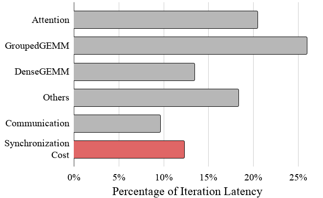
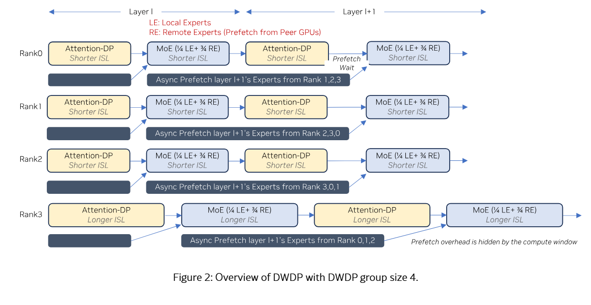
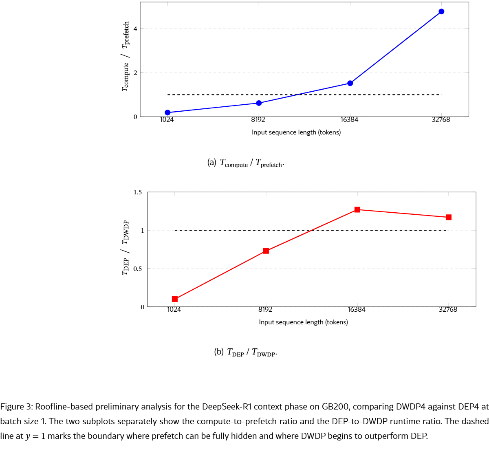
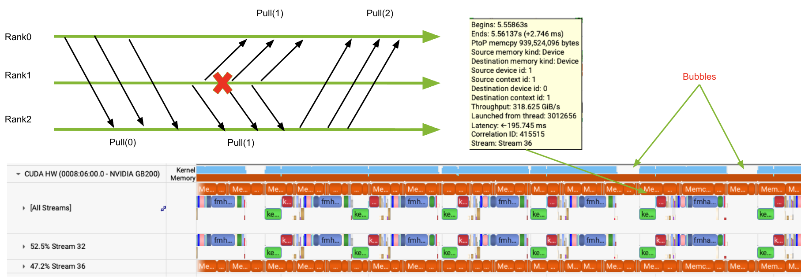
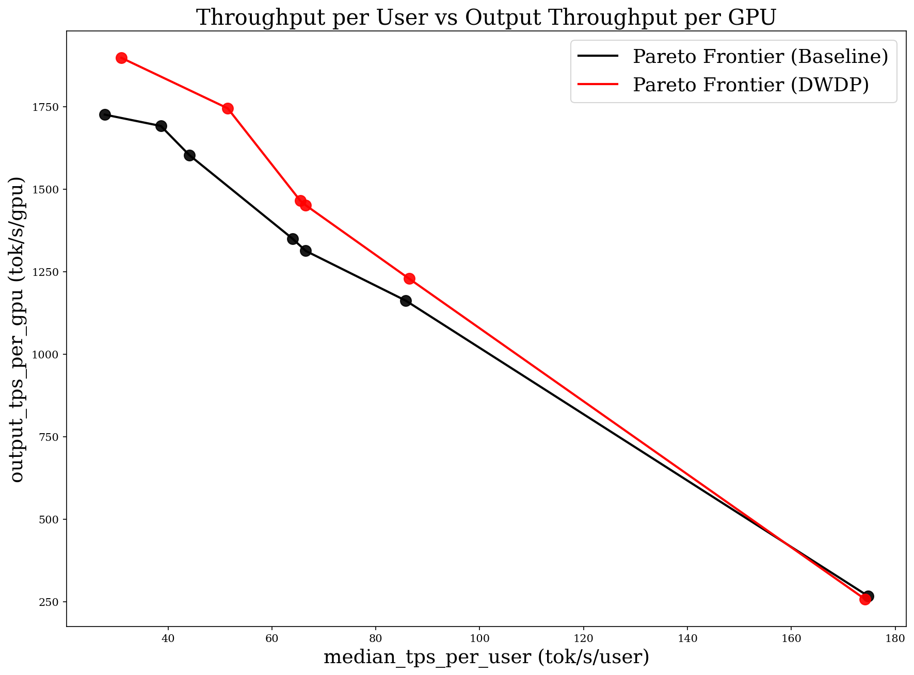
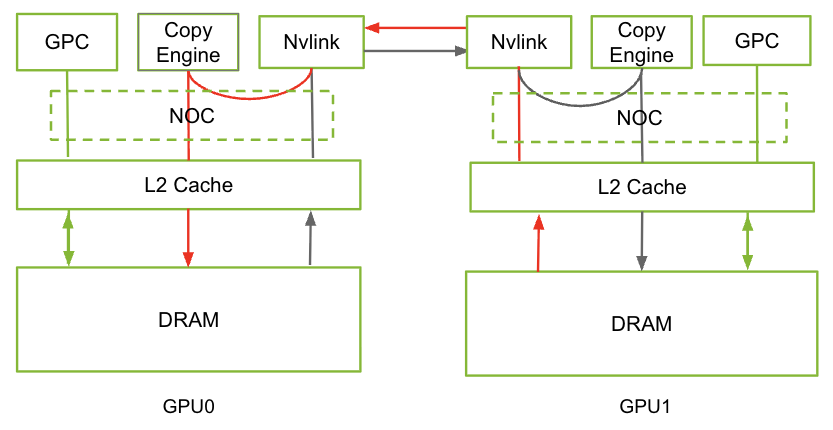
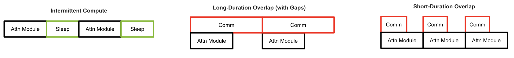
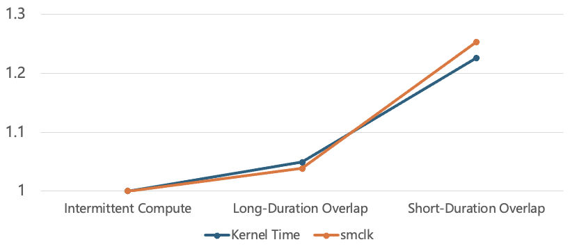

DWDP：面向 NVL72 高性能 LLM 推理的分布式权重数据并行
作者： Wanqian Li、Jintao Peng、Zongfei Jing、Tianyu Zhang、Ze Long、Xianjie Qiao、Xiaoming Chen、Dongxu Yang、Kefeng Duan、June Yang（NVIDIA）
摘要
大语言模型（LLM）推理越来越依赖多 GPU 执行。然而，现有推理并行策略需要在每一层进行 rank 间同步，使端到端性能容易受到工作负载不均衡的影响。本文提出 DWDP（Distributed Weight Data Parallelism，分布式权重数据并行）：一种保留数据并行执行方式、同时把混合专家（MoE）权重卸载到同组 GPU，并按需获取缺失专家的推理并行策略。DWDP 去除了集合式 rank 间同步，使每张 GPU 能够独立推进。针对这种设计的实际开销，本文进一步提出两项优化，分别处理拆分权重管理和异步远程权重预取。
我们在 TensorRT-LLM 中实现 DWDP，并使用 GB200 NVL72 上的 DeepSeek-R1 进行评估。在输入序列长度 8K、输出序列长度 1K、每用户吞吐量为 20–100 TPS/user 的服务区间内，DWDP 在 TPS/user 相近时将端到端输出 TPS/GPU 提高 8.8%。
关键词： 大语言模型、并行策略、推理优化
1 引言
大语言模型在自然语言理解、代码生成、科学推理和多模态感知等广泛任务上快速进步 [1–4]。能力提升伴随着模型规模持续增长 [5–8]，使 LLM 推理逐渐超出单张 GPU 的内存容量，因此越来越需要多 GPU。
为满足增长的内存需求，LLM 推理采用多种模型并行方式，以不同方法拆分权重和计算，例如针对 MoE 权重的专家并行 [9–11]、针对隐藏维度的张量并行 [12]，以及针对模型层的流水线并行 [13]。这些方法虽然拆分模型的方式不同，却有一个共同基本特征：完成每一层都需要跨 GPU 协调。这种协调由 GPU 间通信实现，并在层边界引入同步。
在真实 LLM 服务中，各 rank 的负载很少完全均衡，因此逐层 rank 间同步越来越成问题。在请求层面，分配到不同 rank 的输入往往具有不同序列长度和 KV 缓存命中率 [14,15]，从而产生不同的计算与内存访问成本。在权重层面，每个 rank 激活的模型计算量也可能不同。例如在 MoE 模型中，偏斜的路由会让部分 rank 服务更热门的专家并处理更多 token。请求层面与权重层面的不均衡共同造成明显的 rank 间推理延迟差异。主流并行执行策略会在层边界同步各 rank，使局部差异放大为全局等待时间，端到端吞吐量最终受最慢 rank 限制。
图 1 展示了这一现象。该配置结合注意力数据并行与专家并行，本文将其称为 DEP（data parallelism with expert parallelism，结合专家并行的数据并行）。请求层面的不均衡会在注意力之后产生偏斜，并在第一次 all-to-all 时表现为等待时间；MoE 阶段的权重层面不均衡又会引入新的偏斜，并在第二次 all-to-all 时再次暴露。图 1 的内核分解显示，当各 rank 序列长度的变异系数为 20% 时，同步开销约为 12%。这一不均衡程度完全落在生产工作负载的常见范围内。结果说明，同步开销并非边缘情况；在现实不均衡条件下，它会明显降低端到端推理吞吐量。


图 1：工作负载不均衡在 DEP 中引起的同步开销。(a) 请求层面与权重层面的不均衡如何转化为等待时间；(b) 内核分解量化不均衡造成的同步开销。配置：GB200 上的 DeepSeek-R1，输入/输出序列长度（ISL/OSL）为 8K/1，输入比例为 0.8，即输入长度在 0.8×8K 到 8K 之间。
已有工作通过更好的调度与负载均衡减少 rank 间不均衡，包括缓存感知调度 [14–18]、负载感知调度 [19,20] 和专家负载均衡 [10,21]。但这些技术并未从根本上改变现有推理并行策略的同步要求。随着服务负载越来越多样化，同步开销仍然无法避免，并持续限制性能。
为解决这一限制，本文提出 DWDP。它从推理关键路径中去除集合式 rank 间同步。在 DWDP 中，各 rank 继续采用数据并行，而 MoE 权重分散卸载到同组 GPU，以共同容纳完整模型；推理时按需获取所缺失的专家。因此，每个 rank 都可独立执行推理，无需等待其他 rank，直接缓解工作负载不均衡造成的性能损失。
当远程权重预取可以隐藏在计算之后时，DWDP 最有效。实践中，这既需要高带宽 GPU 点对点通信，也需要足够长的逐层计算窗口。LLM 推理的上下文阶段通常能够满足这些条件，因此本文重点把 DWDP 应用于上下文服务器。
主要贡献
- 提出 DWDP，一种把数据并行与基于 GPU 的权重卸载结合起来的推理并行策略。DWDP 从关键路径中去除集合式 rank 间同步，使每个 rank 能独立执行推理。
- 识别高效实现 DWDP 的两项关键挑战：卸载导致的拆分权重管理开销，以及异步远程权重预取造成的通信侧性能损失。本文提出两项对应优化，并分析通信与计算重叠后仍然存在的干扰。
- 在 TensorRT-LLM 中实现 DWDP，并在 GB200 NVL72 上使用 DeepSeek-R1 评估。在典型 8K/1K、20–100 TPS/user 的服务场景中，DWDP 在 TPS/user 相近时把端到端输出 TPS/GPU 提高 8.8%，将性能前沿推向更优区域。
2 方法概述

图 2：DWDP 组大小为 4 时的整体设计。
图 2 以 MoE LLM [1,5] 为例展示 DWDP 的核心思想。为容纳完整模型，DWDP 在各 rank 之间保留数据并行执行，同时把 MoE 权重卸载到同组 GPU。之所以针对 MoE 权重，是因为它们占据模型内存的主要部分，而注意力权重只占较小比例。
在一个 DWDP 组内，每个 rank 都完整复制注意力权重，而每个 MoE 层的专家分散到不同 rank。因此，每个 rank 永久保存本地专家，其余专家位于其他 GPU。执行某个 MoE 层之前，rank 按需取得缺失的远程专家，组装该层所需权重。
运行时，DWDP 把第 $l+1$ 层缺失远程专家的异步预取，与第 $l$ 层的 MoE block 以及第 $l+1$ 层的注意力 block 重叠。这两个 block 共同提供隐藏远程权重预取的计算窗口。在执行第 $l+1$ 层 MoE block 前，rank 会等待所有远程专家到达；该层结束后释放预取的远程专家。DWDP 使用双缓冲在各层之间维持这一流水线。
为去除推理时的 rank 间同步，DWDP 不使用 NCCL 集合通信 [22]（例如 all-gather）收集远程权重，因为这类操作会同步各 rank。每个 rank 改用由 copy engine 驱动的 cudaMemcpyAsync 从其他 GPU 拉取远程专家，不占用 SM 资源。传输以串行点对点拉取方式发出，不会在 rank 之间引入同步。只要某一层需要的专家已到达，该 rank 就能独立执行推理，无需等待其他 rank。从解耦服务 [14,19,20] 的角度看，每个 rank 仍是独立推理 worker，可独立接收请求并返回响应。
DWDP 还带来更灵活的专家放置方式。每个 rank 只需在执行 MoE block 前取得一层权重，因此专家数量无需被 DWDP 组大小整除，也不要求各 rank 的专家分区完全不重叠。各 rank 可以配置相同数量的本地专家，并在组大小无法整除专家数量时允许冗余放置。这一宽松约束支持以单 rank 为粒度配置资源。当内存允许时，冗余还能增加每个 rank 的本地专家数量，降低远程预取开销。
完全异步推理和灵活专家放置是 DWDP 的两项主要优势，但也带来新挑战。权重被拆分为本地专家和远程专家，因此需要高效的拆分权重管理；异步远程权重预取还会引入通信侧开销，包括通信—计算干扰，以及源 rank 上的多对一争用。第 4 节将详细介绍相应优化。
3 初步分析
本文使用逐层 roofline 模型 [23] 判断 DWDP 何时能够优于 DEP，以及增益受什么根本因素限制。分析聚焦 GB200 上 DeepSeek-R1 的上下文阶段，对比 DWDP4 与 DEP4。后缀 4 表示四 rank 执行组：DWDP4 使用组大小为 4 的 DWDP，DEP4 使用相同组大小的 DEP 基线。
从高层看，DWDP 可以让远程专家预取与计算重叠，而 DEP 会同步执行计算和专家并行通信。因此，DWDP 的逐层延迟可表示为
DEP 的逐层延迟为
其中，$T_{\mathrm{prefetch}}$ 是获取缺失远程专家权重的时间，$T_{\mathrm{all2all}}$ 是专家并行 all-to-all 延迟。
为估算 $T_{\mathrm{compute}}$，我们先用标准 roofline 近似对一层中的每个算子建模。对于 FLOPs 为 $F$、内存流量为 $B$ 的算子，其延迟估计为
其中 $P_{\mathrm{peak}}$ 与 $BW_{\mathrm{mem}}$ 分别是硬件峰值算力和内存带宽。对注意力与 MoE 的算子时间求和，得到 $T_{\mathrm{compute}}$。
本文关注两个派生指标：$T_{\mathrm{compute}}/T_{\mathrm{prefetch}}$ 表示 DWDP 能否隐藏远程权重预取；$T_{\mathrm{DEP}}/T_{\mathrm{DWDP}}$ 表示 DWDP 相对 DEP 的预期加速。图 3 绘制了 batch size 为 1 时，这两个指标随输入序列长度变化的结果。

图 3：GB200 上 DeepSeek-R1 上下文阶段的 roofline 初步分析，batch size 为 1，对比 DWDP4 与 DEP4。两幅子图分别展示计算/预取时间比和 DEP/DWDP 运行时间比。$y=1$ 的虚线表示预取能够完全隐藏、DWDP 开始优于 DEP 的边界。
结果显示，DWDP 在约 16K token 处开始优于 DEP。随着 ISL 增长，$T_{\mathrm{compute}}/T_{\mathrm{prefetch}}$ 从小于 1 增长到大于 1，说明更长上下文提供了足够大的计算窗口，可摊销并最终隐藏远程预取开销。也就是说，DWDP 需要每层具有足够计算量来覆盖远程权重预取。16K 阈值只适用于 batch size 为 1 的设置；增加 batch size 会扩大计算窗口，使 DWDP 在更短上下文中也可能获益。
DWDP 相对 DEP 的优势来自从关键路径移除同步 all-to-all 通信，但优势并不会随 ISL 单调增长。当序列非常长时，计算在两种方法中都占主导，同步 all-to-all 在 DEP 延迟中的比例下降，因此 DWDP 的边际加速也会减小。
上述分析假设工作负载完全均衡。它没有计入 DWDP 在负载不均衡时减少同步开销的额外收益，也没有包含实际实现问题，例如权重预取与计算重叠时的争用。下一节将讨论这些问题和对应优化。
4 设计挑战与优化
本节介绍 DWDP 的主要实现开销与解决方法，重点包括去除拆分权重合并开销，以及缓解异步预取造成的源端多对一通信争用。我们先分析基线实现的内核分解和运行时 trace，再据此提出优化。
4.1 基线实现与性能分析
4.1.1 内核分解分析
为理解 DWDP 的实际瓶颈，我们首先评估一个朴素基线实现。表 1 对比 DeepSeek-R1 的 DEP4 和 DWDP4 在仅上下文测试中的迭代延迟分解。
表 1：GB200 上 DeepSeek-R1 的仅上下文迭代延迟分解。输入序列长度为 8K，比例为 0.8，上下文阶段最大 token 数为 32768。最后一列给出按 DEP4 迭代延迟归一化的各类别差值。
| 类别 | DEP4（μs） | DWDP4（μs） | Δ/TDEP4 |
|---|---|---|---|
| Attention | 269.67 | 320.56 | -3.86% |
| GroupedGEMM | 342.40 | 337.42 | 0.38% |
| DenseGEMM | 177.50 | 189.28 | -0.89% |
| 其他 | 241.69 | 284.32 | -3.23% |
| 通信 | 126.74 | 0.00 | 9.60% |
| D2D Copy | 0.00 | 34.00 | -2.58% |
| P2P Copy | 0.00 | 429.00 | — |
| 同步成本 | 161.85 | 0.00 | 12.26% |
| 迭代延迟 | 1319.85 | 1165.58 | 11.69% |
该分解同时体现了 DWDP 的潜力和剩余低效。相对 DEP，DWDP 完全消除同步成本，并把通信移出关键路径，两项效果合计对应 21.86% 的迭代延迟毛收益。但基线实现也出现两项回退：一是增加 D2D copy 开销；二是 Attention 和“其他”等计算类别变慢。这些回退使实际净收益下降到 11.69%。
这一结果为后续优化提供方向。基线 DWDP 会产生 34.00 μs 的 D2D copy，因为计算前必须把本地权重和预取的远程权重合并到连续 buffer；第 4.2 节解决这一问题。Attention 和“其他”类别时间增加，则说明远程权重预取与计算重叠会产生不可忽略的通信—计算干扰。附录 A 分析了这一影响，并表明本文设置中的主因是功率导致的频率限制。
4.1.2 运行时 Trace 分析
除内核分解外，我们还分析了基线 DWDP 的 Nsight Systems 运行时 trace。结果揭示了异步拉取远程权重的实际问题：每个 MoE 层中，不同目标 rank 可能同时从同一个源 rank 拉取缺失专家，使源端 copy engine 出现多对一通信争用。

图 4：在 max_num_tokens=16384、输入序列长度 4K–8K 时，DWDP 中源端多对一通信争用的 Nsight Systems trace。多个目标 rank 同时从同一源 rank 拉取远程权重，源端 copy engine 会串行化这些请求，并暴露计算空洞。
图 4 展示了逐层计算窗口仅与远程权重预取时间相当的典型情况。在这一范围内，源 rank 的串行化会拉长通信窗口，使下一个计算区域开始前出现明显空洞。该影响虽然没有在表 1 中成为独立类别，却仍会显著降低 DWDP 的实际收益。第 4.3 节使用时分复用方案解决源端串行化问题。
4.2 消除拆分权重合并开销
DWDP 会自然产生拆分权重：每个 rank 永久保存本地专家，并按需把缺失远程专家预取到独立 buffer。因此，MoE 计算所需权重并不位于单一连续 buffer 中。
现有 MoE groupedGEMM 内核通常假设权重位于单一连续 buffer，因此这一布局会造成问题。直接实现必须先执行一次启动前 device-to-device copy，把本地权重和预取远程权重合并，再启动内核。这一步会增加内存带宽消耗和延迟。
为消除合并开销，我们扩展 MoE groupedGEMM 内核，使其直接读取多个权重 buffer。该内核以 CuTe DSL [24] 实现，其可扩展接口使修改较直接。具体而言，我们增加基于 TensorList 的输入，让内核在内部选择本地 buffer 或预取远程 buffer，无需依赖外部合并 buffer。该设计仍与现有布局和分片方案兼容。它会增加少量索引与地址计算开销，但性能分析和端到端评估均未发现有意义的回退。
4.3 缓解异步通信争用
4.3.1 理论分析
第 4.1.2 节的 trace 表明，完全异步的远程权重拉取会在源 rank 形成多对一争用并暴露计算空洞。为隔离这一影响，我们分析理想通信时间与逐层计算时间相当的边界情况。如果没有争用，通信在这一范围内几乎可以完全隐藏，因此关键问题是：异步争用本身是否会把近乎隐藏的通信变成可见的计算空洞。
设一个 DWDP 组有 $N$ 个 rank。每轮通信中，每个 rank 都要从其余 $N-1$ 个 rank 拉取远程权重。设无争用时的理想总通信时间为 $T$。由于每个 rank 会串行发出 $N-1$ 次拉取，一次拉取的理想服务时间为：
我们使用随机状态模型：每当一个 rank 准备发出下一次拉取时，其源 rank 在其余 peer 中均匀分布。对于一个被标记的 rank，它选定某个源之后，另外 $N-2$ 个 rank 各自以 $1/(N-1)$ 的概率选择同一源。因此，针对该源的竞争请求数为：
为简化模型，我们只计算发生争用的概率。定义争用级别 $C$ 为同时指向同一源的拉取总数，其中包含被标记的拉取，因此 $C=X+1$。
我们不进一步把争用概率转换为精确通信时间。在完全串行且请求大小相同的近似下，争用度为 $C$ 的拉取延迟约为 $Cτ$，但实际延迟取决于许多系统因素。这里的目标只是说明低阶多对一争用会自然出现，因此应明确缓解。表 2 给出多种 DWDP 组大小下的争用概率。
表 2：随机异步模型下的争用概率 Pr[C=c]，表中数值为百分比。
| 配置 | C=1 | C=2 | C=3 | C=4 | C=5 | C=6 | C=7 | C=8 | C=9 | C=10 | C=11 | C=12 | C=13 | C=14 | C=15 |
|---|---|---|---|---|---|---|---|---|---|---|---|---|---|---|---|
| DWDP3 | 50.00 | 50.00 | — | — | — | — | — | — | — | — | — | — | — | — | — |
| DWDP4 | 44.44 | 44.44 | 11.11 | — | — | — | — | — | — | — | — | — | — | — | — |
| DWDP6 | 40.96 | 40.96 | 15.36 | 2.56 | 0.16 | — | — | — | — | — | — | — | — | — | — |
| DWDP8 | 39.66 | 39.66 | 16.52 | 3.67 | 0.46 | 0.03 | 0.00085 | — | — | — | — | — | — | — | — |
| DWDP12 | 38.55 | 38.55 | 17.35 | 4.63 | 0.81 | 0.097 | 0.0081 | 0.00046 | 0.000017 | 3.86×10⁻⁷ | 3.86×10⁻⁹ | — | — | — | — |
| DWDP16 | 38.06 | 38.06 | 17.67 | 5.05 | 0.99 | 0.14 | 0.015 | 0.0012 | 0.000077 | 3.69×10⁻⁶ | 1.32×10⁻⁷ | 3.42×10⁻⁹ | 6.11×10⁻¹¹ | 6.71×10⁻¹³ | 3.43×10⁻¹⁵ |
结果表明，在随机异步执行中，最常见的是 $C=1$ 和 $C=2$ 等低阶争用；随着 $N$ 增大，高阶争用的概率质量逐渐增加。因此，即使调度并不异常，较大的 DWDP 组也会自然面对更高的多对一通信争用概率。这促使我们设计一种对常见低阶争用尤其稳健的缓解方案。
4.3.2 使用时分复用进行复制
为解决源 rank 的多对一争用，我们把每次远程权重传输拆分为固定大小的 slice，并在所有活跃目标 rank 之间以 round-robin 方式调度。关键硬件观察是 copy engine 采用流水线执行；当请求足够小时，可以同时保持多个小 slice 在途。设 slice 大小为 $s$，并考虑 copy engine 能同时保持两个 slice 在途的情况。一个 slice 发出后，在它完全结束前，engine 已可开始发出另一个小 slice。因此，即使某个 slice 因通信争用变慢，源端仍能继续推进另一请求。也就是说，分块会把一次整体拉取转换为一系列小 DMA 请求，而流水线执行允许它们局部重叠。
实现中，每个源 rank 都为每个目标 rank 维护一个待处理 slice 队列。当一个 rank 需要拉取大小为 $M$ 的远程专家 shard 时，将其拆分成 $K=⌈M/s⌉$ 个 slice。源端调度器以 round-robin 顺序服务所有非空队列，每轮最多从每个队列发出一个 slice。清单 1 给出构建批量预取复制计划的伪代码。核心思想是先遍历 slice offset，再以 round-robin 顺序遍历 peer，使不同源 rank 的 slice 在最终 DMA 调度中交错。
清单 1：以 round-robin slice 顺序构建批量预取复制计划的伪代码。
copy_plan = []
for each parameter p:
M = prefetch_size(p)
for offset = 0 to M step s:
chunk = min(s, M - offset)
for peer in round_robin(remote_peers):
src = peer_ptr(peer, p) + src_offset(peer, p) + offset
dst = local_buffer(peer, p) + offset
copy_plan.append((dst, src, chunk))
return copy_plan
从概念上说，该机制利用小请求的流水线执行，在目标端形成更细粒度的流量分区。它不会让一个目标通过整体大拉取独占 copy engine，而是使用切片和 round-robin，迫使源端按 slice 粒度在各目标之间交错推进。其思路类似高性能网络中的虚拟通道隔离：当一个通道因争用变慢时，其他通道仍能高效利用网络。这里每个目标的 slice 队列发挥相似作用，防止一次受阻拉取拖住指向同一源的全部其他拉取。
该设置带来一个重要结论：如果流水线 engine 能同时保持两个小 slice 在途，那么即使两个在途请求各自遇到争用度 2，rank 级数据拉取也不会减速。换言之，只有当两个在途 slice 同时遇到至少 3 路争用时，通信导致的减速才会出现。这解释了双 slice 流水线为何能够抵抗低阶争用：一个轻度争用的 slice 暂时延迟时，另一个仍能保持端口繁忙。网络波动在实践中无法避免，但小 slice 上的争用通常持续时间较短，不容易长期阻塞网络。
5 实验结果
5.1 实验设置
硬件、软件栈与模型
所有实验均在 GB200 NVL72 [25] 平台上进行。我们在 TensorRT-LLM [26] 推理框架中实现 DWDP，代码基于 TensorRT-LLM commit 3a89495，上游集成正在通过 TensorRT-LLM PR #12136 推进。评估模型为 DeepSeek-R1 [1,5] 的 NVFP4 checkpoint，其中 MoE 权重以 NVFP4 量化，注意力模块使用 FP8 KV 缓存。
基线
全部评估都使用解耦服务模式 [14,19,20]，DWDP 应用于上下文服务器。主要基线是在相同运行时和硬件约束下采用传统 DEP 的配置。除非特别说明，我们保持生成服务器配置不变，只修改与 DWDP 相关的上下文服务器配置。
指标
仅上下文实验主要报告相对 DEP 基线的 TPS/GPU 加速比和首 token 时间（TTFT）加速比。端到端实验报告每用户每秒 token 数（TPS/user）、每 GPU 每秒 token 数（TPS/GPU）和 TTFT，重点考察给定 TPS/user 约束下的吞吐效率权衡。TTFT 为从请求到达到首个生成 token 的中位时间，包含排队时间。这些指标可同时描述 DWDP 在上下文阶段的性能收益及其对端到端服务效率的影响。
5.2 仅上下文结果
仅上下文实验设置
本节使用 Artificial Analysis 数据集隔离评估上下文阶段。我们先研究 DWDP 的性能收益如何随工作负载特征和服务器配置变化，再隔离评估第 4 节两项优化各自的贡献，从而验证 DWDP 的异步执行模型能否在不同工作负载和服务器配置下提高上下文服务器效率。除非特别说明，每次实验只改变一个因素，其余参数保持为对应表格中所列固定值。
工作负载与配置的消融实验
我们首先研究 DWDP 的仅上下文性能加速如何随 ISL、上下文阶段最大 token 数（MNT）、负载不均衡程度和 DWDP 组大小变化。除非特别说明，本段结果尚未包含第 4 节的争用缓解优化，其贡献将在后文单独评估。
表 3：不同工作负载和配置下的仅上下文性能消融。
(a) 不同 ISL 下的性能加速（固定 MNT=32768）
| ISL | TTFT 加速比 | TPS/GPU 加速比 |
|---|---|---|
| 1024 | 1.27 | 1.11 |
| 8192 | 1.16 | 1.10 |
| 16384 | 1.12 | 1.09 |
| 32768 | 1.11 | 1.09 |
(b) 不同 MNT 下的性能加速（固定 ISL=8192）
| MNT | TTFT 加速比 | TPS/GPU 加速比 |
|---|---|---|
| 16384 | 1.07 | 1.01 |
| 32768 | 1.16 | 1.10 |
(c) 不同 ISL/STD 下的性能加速
| ISL/STD | TTFT 加速比 | TPS/GPU 加速比 |
|---|---|---|
| 16384/0 | 1.12 | 1.09 |
| 16384/1024 | 1.11 | 1.08 |
| 16384/2048 | 1.13 | 1.11 |
| 16384/4096 | 1.18 | 1.15 |
(d) 不同 DWDP 组大小下的性能加速（固定 ISL=16384、MNT=32768）
| 组大小 | TTFT 加速比 | TPS/GPU 加速比 |
|---|---|---|
| DWDP3 | 0.86 | 1.093 |
| DWDP4 | 1.15 | 1.091 |
表 3(a) 显示，在 ISL 从 1K 到 32K 的范围内，DWDP 实现了 1.09–1.11× TPS/GPU 加速和 1.11–1.27× TTFT 加速。当 MNT 固定且足够大时，性能加速随 ISL 增加而降低。这与图 3 的初步分析一致：序列越长，计算在上下文阶段延迟中的占比越高，减少同步通信带来的相对收益越小。这并不与初步分析中 batch size 为 1 的阈值矛盾。这里 MNT 固定为 32768，运行时可以形成更大的有效上下文 batch，扩大计算窗口，因此即使 1K 输入也能从 DWDP 获益。
表 3(b) 显示，在不同 MNT 设置下，DWDP 实现 1.01–1.10× TPS/GPU 加速和 1.07–1.16× TTFT 加速。在 ISL 相同时，每次 forward 的运行时 token 预算越大，隐藏权重预取开销的计算窗口也越大，因此性能收益更高。
表 3(c) 显示，随着工作负载不均衡程度增加，DWDP 实现 1.08–1.15× TPS/GPU 加速和 1.11–1.18× TTFT 加速。输入序列长度标准差越大，DWDP 相对 DEP 的收益越高。这支持 DWDP 的核心动机：在负载更加不均衡时，DWDP 的异步执行可以避免 DEP 不断增长的同步成本。
表 3(d) 显示，DWDP3 与 DWDP4 的 TPS/GPU 加速几乎相同，说明 DWDP 的上下文侧核心收益在较小组规模下仍能保持。DWDP3 的 TTFT 加速较差，可能因为上下文侧部署较小、总吞吐量更低，使首 token 前的排队延迟上升。更关键的是，DWDP3 体现了另一项优势：相比传统 DEP，它支持更细粒度的资源分配，这对解耦服务很有价值。
总体而言，消融实验表明 DWDP 能稳定提高上下文侧性能。当负载提供足够大的计算窗口以隐藏权重预取，并且不均衡使 DEP 的同步成本更严重时，收益最大。
消除拆分权重合并的效果
我们使用与表 1 相同的配置评估拆分权重合并消除优化。去除关键路径中的 D2D 合并复制后，DWDP 相对其朴素基线把 TPS/GPU 提高约 3%，且 groupedGEMM 执行没有出现有意义的回退。
争用缓解效果
我们在 ISL=8K 的仅上下文负载下使用 1 MB slice，通过改变 ISL ratio 和 MNT 评估争用缓解。表 4 在各行内以 DEP 归一化 TPS/GPU，对比仅启用拆分权重合并消除的 DWDP 和加入争用缓解的完整 DWDP。逐层计算窗口较短时，也就是 MNT 较小、ISL ratio 较低时，争用缓解带来的额外收益最大。
表 4：ISL=8K、slice 大小 1 MB 的仅上下文 TPS/GPU。每行相对 DEP 归一化。
| ISL Ratio | MNT | DEP | DWDP + 消除合并 | 完整 DWDP |
|---|---|---|---|---|
| 0.5 | 16384 | 1.000 | 0.995 | 1.081 |
| 0.5 | 32768 | 1.000 | 1.140 | 1.139 |
| 0.8 | 16384 | 1.000 | 1.039 | 1.053 |
| 0.8 | 32768 | 1.000 | 1.098 | 1.109 |
表 4 显示，争用缓解的主要收益来自消除拆分权重合并后仍存在的随机通信延迟。上下文侧计算窗口较短时，这一效果最强。MNT 越小、ISL ratio 越低，完整设计的收益越大，因为较小的平均 ISL 会缩短逐层计算时间，而通信时间基本不变。ISL ratio=0.5、MNT=16K 时最明显：仅消除合并的 DWDP 略低于 DEP，而完整 DWDP 明显高于 DEP。当计算窗口增大，例如 MNT=32K 时，额外收益会显著缩小，因为基线配置已经可以隐藏更大比例的通信成本。
5.3 端到端结果
端到端实验设置
本节评估解耦服务下 DWDP 对端到端性能的影响。我们使用 SemiAnalysis 数据集，最大输入长度 8K、输出长度 1K，输入长度范围为 6.4K–8K（输入比例 0.8）。基线选择现有 Pareto 前沿中 20–200 TPS/user 的数据点，并评估 DWDP 能否把它们推向更优区域，即在 TPS/user 相近时获得更高输出 TPS/GPU，同时单独报告相应 TTFT 权衡。
为便于对比，我们固定生成服务器配置，只在上下文服务器使用 DWDP，并主要通过改变上下文 GPU 数量寻找更优数据点。除非特别说明，本节端到端结果尚未包含第 4 节争用缓解优化带来的增益。
TPS/user 与输出 TPS/GPU 分析
图 5 显示，DWDP 确实把端到端 Pareto 数据点推向更优位置：在大部分目标区间内，TPS/user 相近时，它都比基线获得更高输出 TPS/GPU。这是 DWDP 追求的主要端到端收益。表 5 汇总各 TPS/user 区间的平均加速。低 TPS/user 区间收益最明显，例如在 20–30 TPS/user 时，DWDP 获得 1.15× TPS/user 加速和 1.10× TPS/GPU 加速。
对比 TPS/user 相近的 Pareto 数据点可发现，DWDP 通常比基线使用更少的上下文 GPU，说明收益主要来自上下文 GPU 需求下降。根据已有经验，基线前沿的大部分数据点受生成阶段限制，因此只加速上下文阶段不会直接转化为巨大的端到端吞吐提升。DWDP 提高每张上下文 GPU 的吞吐，使系统能用更少上下文 GPU 维持相近性能，从而提高输出 TPS/GPU。在部分区间内，TPS/user 也会增加，因为减少上下文 GPU 会降低上下文阶段的总请求速率，进而降低运行时生成 batch，提高生成阶段的单用户吞吐量。
在高 TPS/user 区间，服务效率收益变小。此时系统更严重地受生成阶段限制，上下文阶段无法积累足够 token 来摊销 DWDP 的预取开销，因此 DWDP 的效率收益有限，甚至可能略有回退。

图 5：基线与 DWDP 的端到端 Pareto 前沿对比。
表 5：DWDP 在目标 TPS/user 区间内的端到端性能汇总。
| TPS/user 区间 | DWDP 平均 TPS/user 加速比 | DWDP 平均 TPS/GPU 加速比 |
|---|---|---|
| 20–30 | 1.15 | 1.10 |
| 40–50 | 1.16 | 1.08 |
| 60–70 | 1.00 | 1.10 |
| 80–90 | 1.00 | 1.06 |
| 170–180 | 1.00 | 0.97 |
表 6：目标 TPS/user 区间内的 TTFT 中位数对比。
| TPS/user 区间 | TPS/GPU 加速比 | 基线 TTFT（ms） | DWDP TTFT（ms） |
|---|---|---|---|
| 20–30 | 1.10 | 2538 | 8314 |
| 40–50 | 1.08 | 1919 | 7012 |
| 60–70 | 1.12 | 965 | 1640 |
| 80–90 | 1.06 | 1669 | 2280 |
| 170–180 | 0.97 | 494 | 660 |
首 token 时间分析
我们还评估了应用 DWDP 后的 TTFT 中位数，其中包含排队时间。对于每个基线点，我们选择 TPS/user 最接近的 DWDP 点，对比 TPS/GPU 和 TTFT，结果见表 6。
DWDP 在所有评估的 TPS/user 区间都提高了 TTFT。在高 TPS/user 时，系统已经严重受生成阶段限制，上下文阶段无法积累足够 token 来摊销预取开销。在低 TPS/user 时，如果数据点大幅减少上下文 GPU 数量，TTFT 会明显上升。这些回退并不表示单 GPU 上下文效率降低，而是因为缩小上下文侧部署会降低上下文阶段总服务速率，使上下文与生成阶段之间的速率匹配变差，进而增加首 token 前的排队延迟。DWDP 支持更细粒度的上下文配置，未来更好的请求匹配有望缓解这一问题。
6 结论
本文提出 DWDP，一种允许各 rank 完全异步执行的推理并行策略。DWDP 有两项主要吸引力。第一，随着现代 LLM 服务负载越来越多样且不均衡，异步执行可以降低同步成本。第二，它支持更灵活的 GPU 数量配置，使解耦服务能够以更细粒度配置资源，并更好地匹配上下文服务器与生成服务器的速率。
DWDP 的关键要求是高带宽通信。NVL72 等系统在同一域内任意两张 GPU 之间提供高带宽通信，使远程权重预取有可能隐藏在计算之后。与此同时，DWDP 也带来新的设计挑战；高效实现需要协同设计通信、内核与运行时。未来工作将继续提高 DWDP 的效率。
附录 A：通信—计算干扰的深入分析
DWDP 会让远程权重预取与计算重叠。这种重叠会引入硬件争用，降低预期收益。
图 6 展示目标 GPU 的 copy engine（CE）如何通过 NVLink 从另一张 GPU 拉取权重。CE 是专用数据移动引擎，不占用基于流式多处理器（SM）的计算资源。但传输仍会经过两张 GPU 上的片上网络（NoC）、L2 缓存和 DRAM，同时本地 SM 内核也会发出内存请求。因此，远程权重预取与计算可能在内存层级的多个位置相互干扰。

图 6：两张 GPU 之间由 copy engine 驱动的远程权重拉取。传输经过 NVLink，并使用两端的 NoC、L2 缓存和 DRAM。共享 NoC 路由、L2 资源、DRAM 带宽和功率预算都会产生干扰。
在源 GPU 上，请求的权重从 DRAM 读取，经过 L2 和 NoC 后注入 NVLink；在目标 GPU 上，数据被接收并写入其内存层级。该路径会通过 NoC 仲裁、L2 压力、DRAM 带宽争用和功率争用干扰计算。最后一项在现代高功率 GPU 上尤其关键，因为 GPU 使用动态电压频率调整（DVFS），根据总图形功率（TGP）调整工作频率。因此，即使内存带宽尚未饱和，通信与繁重 SM 计算重叠也可能触发降频。
根据计算负载类型，干扰大致可分为两类：与内存受限内核的争用，以及与计算密集型内核的争用。
A.1 与内存受限内核的争用：内存带宽瓶颈
上下文阶段通常处理大量 token，典型内存受限负载包括量化、复制和逐元素向量内核。在 DEP 案例中，这些内核占上下文阶段开销的 18.2%。Blackwell 的 HBM 峰值带宽约为 8 TB/s，而 NVLink 5 的聚合读写带宽最多可消耗 1800 GB/s，相当于总内存带宽的 $1.8/8=22.5%$。因此从 DRAM 角度看，当 NVLink 流量完全利用时，内存受限内核最坏可能减速 22.5%。
该上界与表 1 的端到端分解一致：“其他”类别主要由这类内存受限内核组成，从 DEP4 的 241.69 μs 增长到 DWDP4 的 284.32 μs，约减速 17.6%。实测减速低于 22.5% 的最坏估计，原因有二：通信并非与全部计算内核重叠；L2 缓存可以吸收部分激活流量。总体而言，copy engine 与 SM 会共同竞争 HBM 和共享 L2 缓存，从而降低内核执行和数据传输性能。
A.2 与计算密集型内核的争用：功率导致的频率瓶颈
对上下文阶段注意力模块等高度计算密集型负载，主要干扰源不是内存系统争用，而是功率引起的频率限制。表 1 中，DWDP4 的 Attention 内核约比 DEP4 慢 1.19×，说明 CE 通信与繁重 SM 执行重叠时存在严重干扰。
瓶颈分析：功率与频率争用
繁重计算与通信内核重叠时，总功耗很容易超过 GPU 的热设计功耗（TDP）上限。仅注意力模块就消耗约 96.7% 的 TDP，两端通信消耗约 30.5%，其中包含约 12.9% 的空闲基线。重叠时估算总功耗约为 $96.7%+30.5%-12.9%=114.4%$ 的 TDP，超过功率上限。功率封顶会触发 DVFS，显著降低 GPU 频率。
重叠策略评估
为了理解争用影响，我们评估三种调度配置，它们只在通信相对注意力模块的安排上不同。图 7 展示这些模式，以及无重叠、粗粒度重叠和细粒度重叠的区别：
- 间歇计算（Intermittent Compute）。 在 16K 上下文设置中，在 DeepSeek-R1 注意力模块之间插入较长 sleep 间隔，确保每个模块拥有尽可能大的功率余量，且不与通信重叠。
- 长时间重叠（带间隔）。 每个注意力模块都与长时间 CE 通信任务重叠，在三种模式中重叠时间最长，同时仍保留相邻计算模块之间的较大间隔。
- 短时间重叠。 最接近真实 DWDP：注意力模块紧密调度，并与较小通信任务重叠。

图 7：三种通信模式。间歇计算在注意力模块之间插入较大空闲间隔以提供最大功率余量；长时间重叠使用最长通信窗口，同时保留计算模块间隔；短时间重叠模拟真实 DWDP，以紧密调度的计算和较小通信任务运行。
间歇计算的 sleep 间隔为注意力模块提供最大功率余量，作为无重叠基线。长时间重叠最大化重叠持续时间，但相邻计算模块之间的大间隔仍允许部分功率恢复。短时间重叠最接近真实 DWDP：计算模块紧密排列，通信被拆成较小传输，争用反复注入已经受功率限制的执行窗口。
表 7：三种通信重叠模式下 DeepSeek-R1 注意力模块的 GPU 指标。内核时间和 GPU 频率相对间歇计算基线归一化。
| 类别 | 指标 | 间歇计算 | 长时间重叠 | 短时间重叠 |
|---|---|---|---|---|
| 功率与散热 | 归一化内核时间 | 1.000 | 1.049 | 1.226 |
| 功率与散热 | 归一化 GPU 频率 | 1.000 | 0.963 | 0.798 |
| 内存 | 最大利用率 | 50% | 45% | 47% |
| 内存 | 推导内存访问量（GB） | 1.7 | 8.0 | 6.2 |
| NVLink | 推导 NVLink 内存流量（GB） | — | 6.2 | 4.7 |
关键观察
表 7 揭示了干扰行为的四项关键特征：
- 性能与 GPU 频率高度相关。 长时间重叠和短时间重叠下，注意力内核运行时间分别增至 1.049× 和 1.226×，GPU 频率则分别降至 0.963× 和 0.798×。图 8 展示相同趋势，说明三种模式下注意力内核时间都紧随 GPU 频率变化。

图 8：三种重叠模式下的归一化注意力内核运行时间与 GPU 频率，两条曲线紧密对应。
- L2 和 DRAM 带宽不是主要瓶颈。 三种模式的最大内存利用率都在 45%–50% 的窄范围内，说明重叠时两者都没有接近完全饱和。
- CE 通信重叠几乎没有引入 L2 miss 惩罚。 如果 CE 流量显著降低注意力内核的 L2 命中率，就会迫使更多流量在 L2 与 DRAM 之间移动。用表 7 的绝对计数减去 NVLink 通信流量，可得三种模式的内存访问量约为 1.7 GB、1.8 GB 和 1.6 GB，彼此接近；总 L2 访问量约 24 GB，说明重叠通信几乎没有增加 L2 miss。
- NVLink 流量不是减速的主因。 使用 Nsight Systems 和 Nsight Compute 等公开工具监控 NVLink 后发现，通信与注意力内核重叠时，瞬时 NVLink 吞吐量没有明显波动。重叠不会显著扰动 NVLink 传输速率；有效 NVLink 带宽仍主要由系统频率决定。因此，NVLink 或 NoC 争用不是主要减速原因。
综上，当繁重计算与通信重叠时，证据指向功率引起的降频，而非 L2、DRAM 或 NVLink 争用。这意味着应避免会放大功率尖峰的细粒度重叠模式。
参考文献
- DeepSeek-AI, D. Guo, D. Yang, H. Zhang, J. Song, et al. (2025). DeepSeek-R1: Incentivizing Reasoning Capability in LLMs via Reinforcement Learning. arXiv:2501.12948.
- R. T. McCoy, S. Yao, D. Friedman, M. D. Hardy, T. L. Griffiths (2024). When a Language Model Is Optimized for Reasoning, Does It Still Show Embers of Autoregression? An Analysis of OpenAI o1. arXiv:2410.01792.
- Y. Gao, H. Guo, T. Hoang, et al. (2025). Seedance 1.0: Exploring the Boundaries of Video Generation Models. arXiv:2506.09113.
- A. Cheng, S. Liu, M. Pan, et al. (2025). Barbarians at the Gate: How AI Is Upending Systems Research. arXiv:2510.06189.
- DeepSeek-AI, A. Liu, B. Feng, et al. (2024). DeepSeek-V3 Technical Report. arXiv:2412.19437.
- Moonshot AI (2026). Kimi-K2.5.
- Qwen Team (2025). Qwen3-Coder-480B-A35B-Instruct.
- GLM-5 Team, A. Zeng, X. Lv, Z. Hou, Z. Du, Q. Zheng, B. Chen, et al. (2026). GLM-5: From Vibe Coding to Agentic Engineering. arXiv:2602.15763.
- S. Rajbhandari, C. Li, Z. Yao, M. Zhang, R. Y. Aminabadi, A. A. Awan, J. Rasley, Y. He (2022). DeepSpeed-MoE: Advancing Mixture-of-Experts Inference and Training to Power Next-Generation AI Scale. ICML 2022.
- C. Hwang, W. Cui, Y. Xiong, Z. Yang, Z. Liu, H. Hu, Z. Wang, et al. (2023). Tutel: Adaptive Mixture-of-Experts at Scale. MLSys 2023.
- Z. Yan, H. Bai, X. Yao, et al. (2026). Scalable Training of Mixture-of-Experts Models with Megatron Core. arXiv:2603.07685.
- D. Narayanan et al. (2021). Efficient Large-Scale Language Model Training on GPU Clusters Using Megatron-LM. SC 2021.
- Y. Huang et al. (2019). GPipe: Efficient Training of Giant Neural Networks Using Pipeline Parallelism. NeurIPS.
- R. Qin, Z. Li, W. He, M. Zhang, Y. Wu, W. Zheng, X. Xu (2025). Mooncake: Trading More Storage for Less Computation — A KVCache-Centric Architecture for Serving LLM Chatbot. FAST 2025.
- Z. Xie, Z. Xu, M. Zhao, Y. An, V. S. Mailthody, S. Mahlke, M. Garland, C. Kozyrakis (2025). Strata: Hierarchical Context Caching for Long Context Language Model Serving. arXiv:2508.18572.
- V. Srivatsa, Z. He, R. Abhyankar, D. Li, Y. Zhang (2024). Preble: Efficient Distributed Prompt Scheduling for LLM Serving. OSDI 2024.
- The SGLang Team (2024). SGLang v0.4: Zero-Overhead Batch Scheduler, Cache-Aware Load Balancer, Faster Structured Outputs.
- NVIDIA TensorRT-LLM Team (2026). ADP Balance Strategy.
- Y. Zhong, S. Liu, J. Chen, J. Hu, Y. Zhu, X. Liu, X. Jin, H. Zhang (2024). DistServe: Disaggregating Prefill and Decoding for Goodput-Optimized Large Language Model Serving. OSDI 2024.
- P. Patel, E. Choukse, C. Zhang, A. Shah, Í. Goiri, S. Maleki, R. Bianchini (2024). Splitwise: Efficient Generative LLM Inference Using Phase Splitting. ISCA 2024.
- NVIDIA TensorRT-LLM Team (2026). Scaling Expert Parallelism in TensorRT-LLM, Part 2: Performance Status and Optimization.
- NVIDIA Corporation (2015). NCCL: NVIDIA Collective Communications Library.
- S. Williams, A. Waterman, D. Patterson (2009). Roofline: An Insightful Visual Performance Model for Multicore Architectures. Communications of the ACM 52(4), 65–76.
- NVIDIA (2026). CuTe DSL, NVIDIA CUTLASS documentation.
- NVIDIA Corporation (2024). NVIDIA Blackwell Architecture Technical Overview.
- NVIDIA (2023). TensorRT-LLM: A TensorRT Toolbox for Optimized Large Language Model Inference.